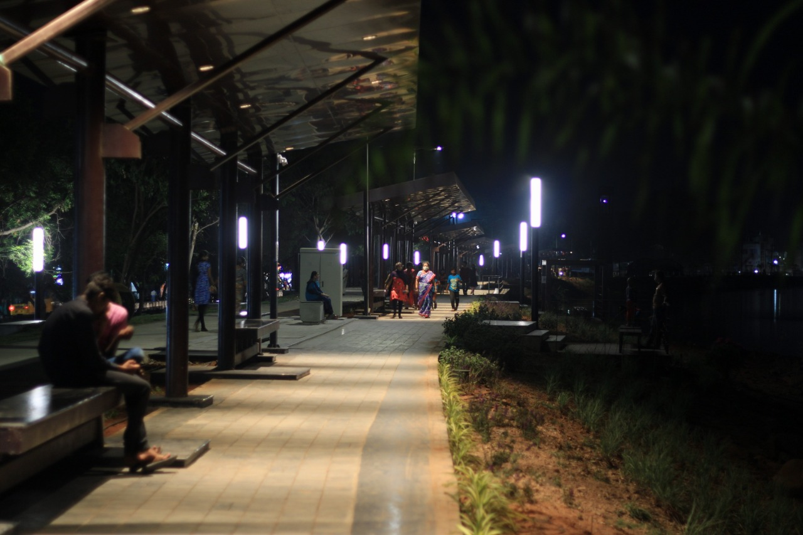

— 01
GOVERNMENT
Smart City Coimbatore, Coimbatore
We are the primary lighting consultant and supplier for the Coimbatore Smart City Coimbatore. We have worked closely with Coimbatore Contractors to bring out the beauty of the spaces through a careful selection of quality lighting fixtures. It was done while adhering to standards set by the Government and the allocated budget.
VIEW MORE